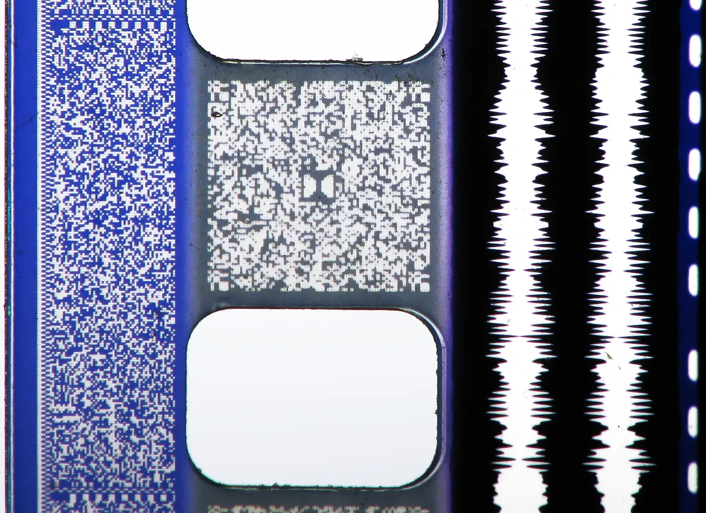

Short answer
A PDF at its own URL is a separate document. It can be evidence. It should not be the only place the operating range exists if the HTML URL is the page you want understood. State the range in HTML and link the file with a name a buyer recognizes.

Definition
Files and pages both need status codes. A link to a PDF that 404s removes the proof. A PDF that opens with a different product name splits the entity. Crawlers may fetch the file, but a buyer question on the product URL is answered by that URL’s HTML. Page count does not grow because you uploaded another brochure with the same slogan.
What belongs on the page
On the product page, write the direct answer and the limit. Link the datasheet with anchor text that names the document. Fetch the PDF URL and confirm it is the file you mean. Give the HTML page and the file one subject each. Do not canonicalize the HTML page to the PDF or the reverse unless one of them is truly the duplicate.
What to check
- State the limit in the HTML page.
- Link the PDF with a descriptive anchor.
- Fetch the PDF URL and confirm status 200.
- Do not treat an extra brochure as new coverage.
A practical example
The only pressure rating sits on page 14 of a PDF, and the HTML hero says “built for industry.” The repair adds the rating and its unit to the HTML and keeps the PDF as the linked evidence. The PDF URL must return that file. No download count is claimed.
What this does not claim
Linking a PDF does not guarantee rankings or AI citations. Mika does not treat file downloads as proof of demand.
Where Mika Visibility files this
The HTML document answers the URL. The PDF is evidence when it is the file you named. Mika Visibility files this on the SEO Health track, with crawlability, status codes, and page basics. SEO Growth remains a separate question about coverage that is still unwritten. GEO remains a separate question about whether a careful reader can find a supportable answer. There is no blended overall score.
FAQ
How should a specification PDF relate to the HTML page?
A PDF at its own URL is a separate document. It can be evidence. It should not be the only place the operating range exists if the HTML URL is the page you want understood. State the range in HTML and link the file with a name a buyer recognizes.
What has to be true of the PDF URL?
Files and pages both need status codes. A link to a PDF that 404s removes the proof. A PDF that opens with a different product name splits the entity. Crawlers may fetch the file, but a buyer question on the product URL is answered by that URL’s HTML. Page count does not grow because you uploaded another brochure with the same slogan.
Does a datasheet PDF guarantee citations?
Linking a PDF does not guarantee rankings or AI citations. Mika does not treat file downloads as proof of demand.
Next step
Run a structured SEO + GEO audit to see health findings, growth gaps, and a blueprint you can act on.
Clearer entities, answers, evidence, and context make pages easier to understand and reference. Results in any answer product are not guaranteed.